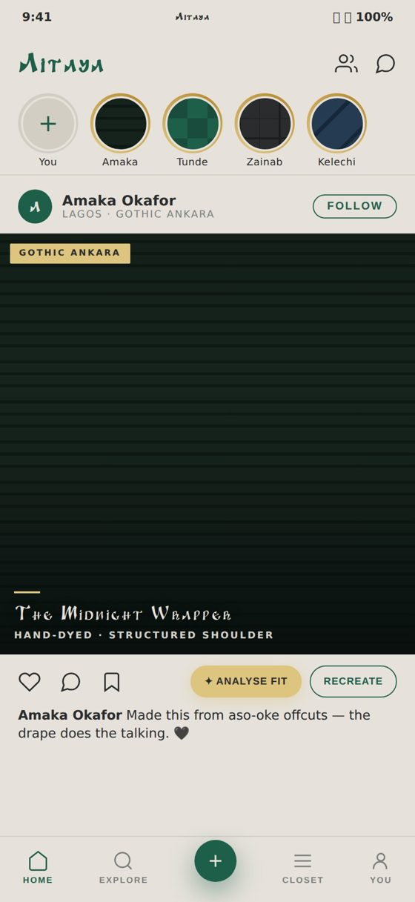
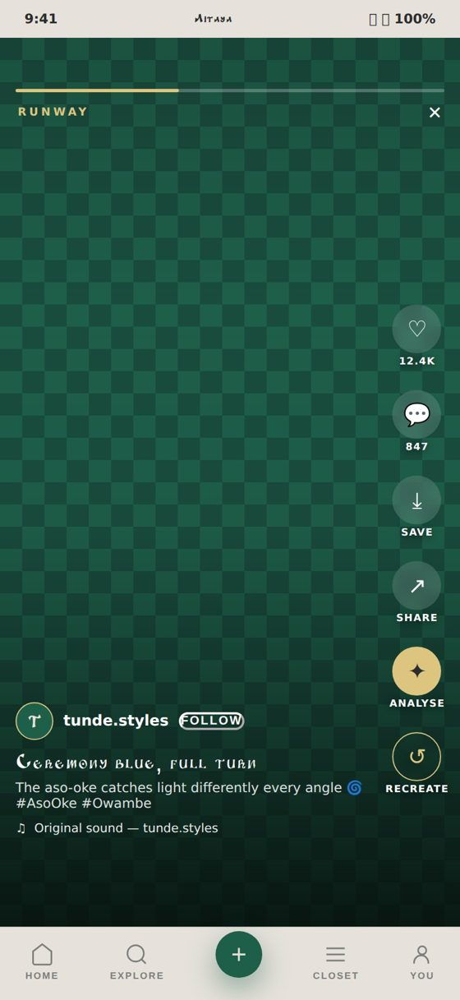

Wipe the glass. Turn the dial. Or tap a niche on the tape below.
Dress for the culture, styled by intelligence.
Aitaya is a fashion ecosystem in your pocket. Your closet talks to a stylist that knows the weather in Kano. Your tailor gets paid through escrow, not promises. Your campus votes one fit to the top every night. Everything connects, and it starts here.
Invites go out in waves. One email when your turn comes, nothing else.
Pick your seat in the ecosystem.
Every wardrobe needs wearers, makers, sellers and stylists. Choose yours and watch this whole page re-dress itself around you. The words change, the colours change, the order of things changes. Change your mind any time, the set won’t judge.
The ecosystem, channel by channel.
Runway, full turn.

Vertical video, full screen, with the action rail down the side. Love a look, save it, analyse the fit, then recreate it from pieces already hanging in your own closet. The aso-oke catches light differently at every angle. Runway is where the whole ecosystem shows off.
Tap the screen or the arrow. The feed keeps rolling, same as launch night.
What’s on air right now.
Vote the fabric. Watch the room change.
This is how squads work in the app. Before any owambe, the group votes a base colour and the tailor cuts every outfit from the winning cloth. Try it on this very page: pick a swatch and the whole room gets re-dressed in your colour.
An ecosystem pays everyone in it.
The looks you just watched were cut, sewn and styled by real hands. On Aitaya those hands get paid properly: escrow for tailors, storefronts for brands, bookings for stylists, every naira through Paystack.
Post looks, build your wardrobe, get styled by people and by the machine.
Briefs come in with measurements attached. Escrow holds the money while you sew.
Sell ready-made from your own storefront, right where the culture already scrolls.
Book sessions and dress clients straight from their own closets.
Before the screen goes dark, leave your name with the station.
Seats open in waves: campus first, then the cities. One email and the ecosystem remembers you on opening night.
Same list, same promise. One email, nothing else.